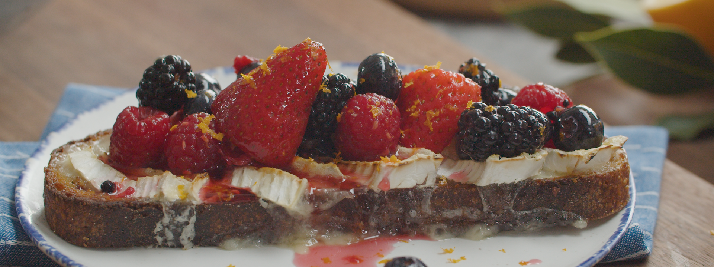

MELTED BRIE TOAST WITH MACERATED BERRIES

Ingredients
Macerated Berries:
- 3 cups mixed berries, divided
- ¼ cup (50g) sugar
- Zest of ½ lemon
- 1 tablespoon lemon juice (Meyer if you can find)
To Serve:
2 thick slices sourdough or country bread, toasted in a pan with butter
Triple-creme Brie, cut into ½-inch slices
Cooking Instructions
- Macerate the Berries: In a medium bowl, lightly mash 1 cup of berries with a potato masher or wooden spoon. Fold in sugar, lemon zest and juice and stir until a syrup begins to form. Fold in remaining 2 cup of berries until everything is well coated, then let sit at room temperature for 1-2 hours.
- Once berries are ready, preheat the broiler to high and move your top oven rack as close to the broiler as possible. Place toast slices on a baking tray and top with slices of brie, letting the edges hang off a bit. Broil for about 30 seconds, keeping a close eye so the cheese doesn't melt too much. Once brie is soft and lightly bubbling, remove from the oven and transfer toasts to plates.
- Top with a smattering of macerated berries and serve immediately, along with plenty of napkins!
Recipes Notes:
- Sprinkle the brie with a bit of granulated sugar before broiling for a sweeter, crème brûléed effect.